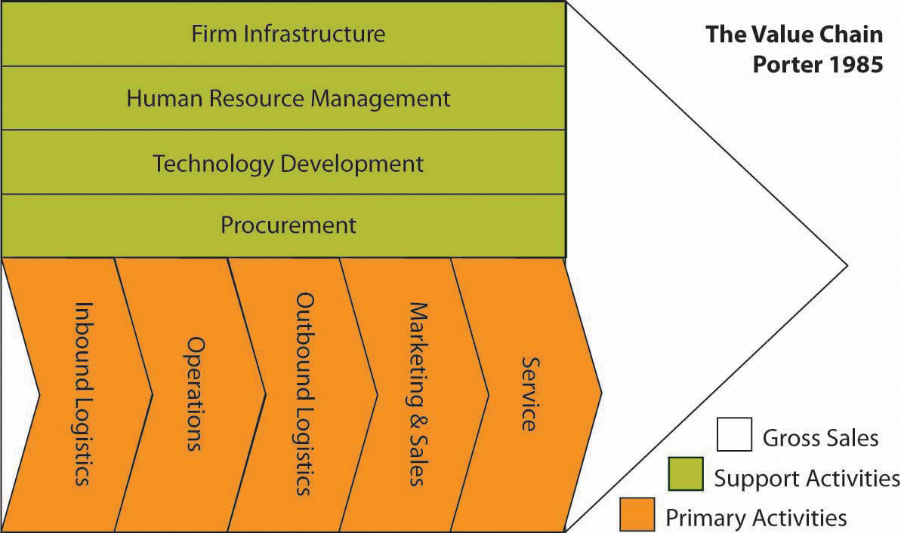
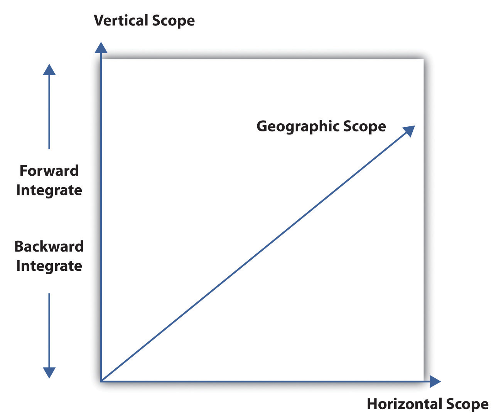

Business-level strategies are intended to create differences between a firm’s position and those of its rivals. To position itself against its rivals, a firm must decide whether to perform activities differently or perform different activities.Michael E. Porter, “What Is Strategy?,” Harvard Business Review 74, no. 6 (November–December 1996): 61–78. A firm’s business-level strategy is a deliberate choice in regard to how it will perform the value chain’s primary and support activities in ways that create unique value.
Collectively, these primary and support activities make up a firm’s value chainThe sequence of activities that a firm undertakes to create value, such as marketing, sales, and service., as summarized in Figure 10.3 "The Value Chain". For example, successful Internet shoe purveyor Zappos has key value-chain activities of purchasing, logistics, inventory, and customer service. Successful use of a chosen strategy results only when the firm integrates its primary and support activities to provide the unique value it intends to deliver. The Zappos strategy is to emphasize customer service, so it invests more in the people and systems related to customer service than do its competitors.
Value is delivered to customers when the firm is able to use competitive advantages resulting from the integration of activities. Superior fit of an organization’s functional activities, such as production, marketing, accounting, and so on, forms an activity system—with Zappos, it exhibits superior fit among the value-chain activities of purchasing, logistics, and customer service. In turn, an effective activity system helps the firm establish and exploit its strategic position. As a result of Zappos’s activity system, the company is the leading Internet shoe retailer in North America and has been acquired by Amazon to further build Amazon’s clothing and accessories business position.
Figure 10.3 The Value Chain
Source: Adapted from Michael Porter, Competitive Advantage (New York: Free Press, 1985). Exhibit is Creative Commons licensed at http://en.wikipedia.org/wiki/Image:ValueChain.PNG.
Favorable positioning is important to develop and sustain competitive advantages.Edward H. Bowman and Constance E. Helfat, “Does Corporate Strategy Matter?,” Strategic Management Journal 22, no. 1 (January 2001): 1–4; Bill McEvily and Akbar Zaheer, “Bridging Ties: A Source of Firm Heterogeneity in Competitive Capabilities,” Strategic Management Journal 20, no. 12 (December 1999): 1133–56. Improperly positioned firms encounter competitive difficulties and can fail to sustain competitive advantages. For example, Sears made ineffective responses to competitors such as Walmart, leaving it in a weak competitive position for years. These ineffective responses resulted from the company’s inability to implement appropriate strategies to take advantage of external opportunities and internal competencies and to respond to external threats. Two researchers have described this situation: “Once a towering force in retailing, Sears spent 10 sad years vacillating between an emphasis on hard goods and soft goods, venturing in and out of ill-chosen businesses, failing to differentiate itself in any of them, and never building a compelling economic logic.”Donald C. Hambrick and James W. Fredrickson, “Are You Sure You Have a Strategy?,” Academy of Management Executive 19, no. 4 (2005): 52. Firms choose from among three generic business-level strategies to establish and defend their desired strategic position against rivals: (1) cost leadership, (2) differentiation, and (3) integrated cost leadership and differentiation. Each business-level strategy helps the firm establish and exploit a competitive advantage within a particular scope.
When deciding on a strategy to pursue, firms have a choice of two potential types of competitive advantage: (1) lower cost than competitors or (2) better quality (through a differentiated product or service) for which the form can charge a premium price. Competitive advantage is therefore achieved within some scope. ScopeThe range of value-chain activities in which a firm is engaged, including the group of product and customer segments served and the array of geographic markets in which the firm competes. includes the geographic markets the company serves as well as the product and customer segments in which it competes. Companies seek to gain competitive advantage by implementing a cost leadership strategy or a differential strategy.
As you read about each of these business-level strategies, it’s important to remember that none is better than the others. Rather, how effective each strategy depends on each firm’s specific circumstances—namely, the conditions of the firm’s external environment as well as the firm’s internal strengths, capabilities, resources, and core competencies.
Choosing to pursue a cost-leadership strategyFirms that pursue a cost-leadership strategy seek to make their products or services at the lowest cost possible relative to their competitors while maintaining a quality that is acceptable to consumers. Firms achieve cost leadership through a multipronged set of tactics, such as building large-scale operations that help them reduce the cost of each unit, eliminating extra features in their products or services, reducing their marketing costs, and finding low-cost sources or materials or labor. means that the firm seeks to make its products or provide its services at the lowest cost possible relative to its competitors while maintaining a quality that is acceptable to consumers. Firms achieve cost leadership by building large-scale operations that help them reduce the cost of each unit by eliminating extra features in their products or services, by reducing their marketing costs, by finding low-cost sources or materials or labor, and so forth. Walmart is one of the most cited examples of a global firm pursuing an effective cost-leadership strategy.
One of the primary sets of activities that firms perform is the set of activities around supply-chain management and logistics. Supply-chain management encompasses both inbound and outbound logistics. Inbound logistics include identifying, purchasing, and handling all the raw materials or inputs that go into making a company’s products. For example, one of Stonyfield Farm’s inputs is organic milk that goes into its organic yogurts. Walmart buys finished products as its inputs, but it must warehouse these inputs and allocate them to its specific retail stores. In outbound logistics, companies transport products to their customer. When pursuing a low-cost strategy, companies can examine logistics activities—sourcing, procurement, materials handling, warehousing, inventory control, transportation—for ways to reduce costs. These activities are particularly fruitful for lowering costs because they often account for a large portion of the firm’s expenditures. For example, Marks & Spencer, a British retailer, overhauled its supply chain and stopped its previous practice of buying supplies in one hemisphere and shipping them to another. This will save the company over $250 million dollars over five years—and will greatly reduce carbon emissions.Michael E. Porter and Mark R. Kramer, “The Big Idea: Creating Shared Value,” Harvard Business Review, January 2011, accessed January 14, 2011, http://hbr.org/2011/01/the-big-idea-creating-shared-value/ar/pr.
DifferentiationAn integrated set of actions designed by a firm to produce or deliver goods or services (at an acceptable cost) that customers perceive as being different in ways that are important to them. stems from creating unique value to the customer through advanced technology, high-quality ingredients or components, product features, superior delivery time, and the like.Michael E. Porter, Competitive Advantage (New York: Free Press, 1985), 150. Companies can differentiate their products by emphasizing products’ unique features, by coming out with frequent and useful innovations or product upgrades, and by providing impeccable customer service. For example, the construction equipment manufacturer Caterpillar has excelled for years on the durability of its tractors; its worldwide parts availability, which results in quick repairs; and its dealer network.
When pursuing the differentiation strategy, firms examine all activities to identify ways to create higher value for the customer, such as by making the product easier to use, by offering training on the product, or by bundling the product with a service. For example, the Henry Ford West Bloomfield Hospital in West Bloomfield, Michigan, has distinguished itself from other hospitals by being more like a hotel than a hospital. The hospital has only private rooms, all overlooking a pond and landscaped gardens. The hospital is situated on 160 acres of woodlands and wetlands and has twenty-four-hour room service, Wi-Fi, and a café offering healthful foods. “From the get-go, I said that the food in the hospital would be the finest in the country,” says Gerard van Grinsven, president and CEO of the hospital.Gerard van Grinsven, “Healthy Living, the Ritz Way” (booklet, BIF-6 Collaborative Innovation Summit, Providence, RI, September 15–16, 2010), 60–61. The setting and food are so exquisite that not only has the café become a destination café, but some couples have even held their weddings there.Gerard van Grinsven, “Healthy Living, the Ritz Way” (presentation, BIF-6 Collaborative Innovation Summit, Providence, RI, September 15–16, 2010).
An integrated cost-leadership and differentiation strategyA strategy to produce relatively differentiated products or services at relatively low costs. is a combination of the cost leadership and the differentiation strategies. Firms that can achieve this combination often perform better than companies that pursue either strategy separately.Gregory G. Dess, Anil Gupta, Jean-François Hennart, and Charles W. L. Hill, “Conducting and Integrating Strategy Research at the International, Corporate, and Business Levels: Issues and Directions,” Journal of Management 21, no. 3 (Fall 1995): 377. To succeed with this strategy, firms invest in the activities that create the unique value but look for ways to reduce cost in nonvalue activities.
Remember, business strategy is related to questions about how a firm competes; corporate strategy is related to questions about what businesses to compete in and how these choices work together as a system. Nonprofits and governments have similar decision-making situations, although the element of competition isn’t always present. A firm that is making choices about the scope of its operations has several options. Figure 10.4 summarizes how all organizations can expand (or contract) along any of three areas: (1) vertical, (2) horizontal, and (3) geographic.
Vertical scopeAll the activities, from the gathering of raw materials to the sale of the finished product, that a business goes through to make a product. refers to all the activities, from the gathering of raw materials to the sale of the finished product, that a business goes through to make a product. Sometimes a firm expands vertically out of economic necessity. Perhaps it must protect its supply of a critical input, or perhaps firms in the industry that supply certain inputs are reluctant to invest sufficiently to satisfy the unique or heavy needs of a single buyer. Beyond such reasons as these—which are defensive—firms expand vertically to take advantage of growth or profit opportunities. Vertical expansion in scope is often a logical growth option because a company is familiar with the arena.
Sometimes a firm can create value by moving into suppliers’ or buyers’ value chains. In some cases, a firm can bundle complementary products. If, for instance, you were to buy a new home, you’d go through a series of steps in making your purchase decision. Now, most homebuilders concentrate on a fairly narrow aspect of the homebuilding value chain. Some, however, have found it profitable to expand vertically into the home-financing business by offering mortgage brokerage services. Pulte Homes Inc., one of the largest homebuilders in the United States, set up a wholly owned subsidiary, Pulte Mortgage LLC, to help buyers get financing for new homes. This service simplifies the home-buying process for many of Pulte’s customers and allows Pulte to reap profits in the home-financing industry. Automakers and car dealers have expanded into financing for similar reasons.
Figure 10.4
Source: M. Carpenter, 2010
Whereas as vertical scope reflects a firm’s level of investment in upstream or downstream activities, horizontal scopeThe number of similar businesses or business activities at the same level of the value chain. refers to the number of similar businesses or business activities at the same level of the value chain. A firm increases its horizontal scope in one of two ways:
Examples of horizontal scope include when an oil company adds refineries; an automaker starts a new line of vehicles; or a media company owns radio and television stations, newspapers, books, and magazines. The degree to which horizontal expansion is desirable depends on the degree to which the new industry is related to a firm’s home industry. Industries can be related in a number of different ways. They may, for example, rely on similar types of human capital, engage in similar value-chain activities, or share customers with similar needs. Obviously, the more factors present, the greater the degree of relatedness. When, for instance, Coca-Cola and PepsiCo expanded into the bottled water business, they were able to take advantage of the skill sets that they’d already developed in bottling and distribution. Moreover, because bottled water and soft drinks are substitutes for one another, both appeal to customers with similar demands.
On the other hand, when PepsiCo expanded into snack foods, it was clearly moving into a business with a lesser degree of relatedness. For one thing, although the distribution channels for both businesses are similar (both sell products through grocery stores, convenience stores, delis, and so forth), the technology for producing the products is fundamentally different. In addition, although the two industries sell complementary products—they’re often sold at the same time to the same customers—they aren’t substitutes.
Why is increased horizontal scope attractive? Primarily because it offers opportunities in four areas:
Economies of scaleThe cost advantages that a business obtains due to expansion; primarily refer to efficiencies associated with supply-side changes, such as increasing or decreasing the scale of production, of a single product type., in microeconomics, are the cost advantages that a business obtains through expanding in size, which is one reason why companies grow large in certain industries. Economies of scale are also used to justify free-trade policies, because some economies of scale may require a larger market than is possible within a particular country. For example, it wouldn’t be efficient for a small country like Switzerland to have its own automaker, if that automaker could only sell to its local market. That automaker may be profitable, however, if it exports cars to international markets in addition to selling to selling them in the domestic market.
Economies of scopeThe cost advantages that a business obtains due to expansion; primarily refer to efficiencies associated with demand-side changes, such as increasing or decreasing the scope of marketing and distribution, of different types of products. are similar in concept to economies of scale. Whereas economies of scale derive primarily from efficiencies gained from marketing or the supply side, such as increasing the scale of production of a single product type, economies of scope refer to efficiencies gained from demand-side changes, such as increasing the scope of marketing and distribution. Economies of scope gained from marketing and distribution are one reason why some companies market products as a bundle or under a brand family. Because segments in closely related industries often use similar assets and resources, a firm can frequently achieve cost savings by sharing them among businesses in different segments. The fast-food industry, for instance, has many segments—burgers, fried chicken, tacos, pizza, and so forth. Yum! Brands, which operates KFC, Pizza Hut, Taco Bell, A&W Restaurants, and Long John Silver’s, has embarked on what the company calls a “multibrand” store strategy. Rather than house all of its fast food in separate outlets, Yum! achieves economies of scope across its portfolio by bundling two outlets in a single facility. The strategy works in part because customer purchase decisions in horizontally related industries are often made simultaneously. In other words, two people walking into a bundled fast-food outlet may desire different things to eat, but both want fast food, and both are going to eat at the same time. In addition, the inherent product and demand differences across breakfast, lunch, dinner, and snacks allows for multiple food franchises to share a resource that would otherwise be largely unused during off-peak hours.
A firm increases geographic scopeThe number of different geographic markets in which an organization participates. by moving into new geographic areas without entirely altering its business model. In its early growth period, for instance, a company may simply move into new locations in the same country. For example, the US fast-food chain Sonic will only open new outlets in states that are adjacent to states where it already has stores.
More often, however, increased geographic scope has come to mean internationalization—entering new markets in other parts of the world. For this reason, international strategy is discussed in depth in the next section. For a domestic firm whose operations are confined to its home country, the whole globe is a potential area of expansion. Remember, however, that just as different industries can exhibit different degrees of relatedness, so, too, can different geographic markets—even those within the same industry. We can assess relatedness among different national markets by examining a number of factors, including laws, customs, cultures, consumer preferences, distances from home markets, common borders, language, socioeconomic development, and many others.
Geographic expansion can be motivated by economies of scale or economies of scope. Research and development (R&D), for example, represents a significant, relatively fixed cost for firms in many industries. When firms move into new regions of a country or global arenas, they often find that they can amortize their R&D costs over a larger market. For instance, the marginal cost for a pharmaceutical firm to enter a new geographic market is lower than the marginal costs of R&D and running clinical trials, which are required when a company wants to bring a new drug into the US market. Once the costs of development and entry are covered, entering new geographic markets brings in new revenues. Because the fixed costs have been amortized over the new, larger market, the average cost for all the firm’s customers goes down. It should come as no surprise, then, that industries with relatively high R&D expenditures, such as pharmaceuticals and computer-related products, are among the most thoroughly globalized industries. Finally, changes in geographic scope can lower costs when operations are moved to lower cost supply markets.
(AACSB: Reflective Thinking, Analytical Skills)